イザベラ
油彩・カンヴァス
食卓の左右で交わされる手の動きを一つずつ拾いたい。器を渡す仕草と蹴り出す脚が、同じ食卓に親密さと敵意を同居させる。
作品・資料の出典を見る ↗作品・資料の記録を読む
原題：Isabella
ジョン・エヴァレット・ミレイ / 1848–1849 / 油彩・カンヴァス
作品・制作の例57件を紹介しています。実作品画像57点、参照・関連画像0点。画像の収集は継続中です。
美術運動と装飾芸術
The Pre-Raphaelites and the Decorative Arts
川面に開いた手。織機から離れた手。家具の扉の中では、二人が盤を挟んで遊んでいます。
一枚を大きく開いて、指先から物語を読んでみてください。初期の兄弟団、その友人と工房、後の世代による作品を、作者と制作年を添えて収録しました。
制作年の古い順に並んでいます。制作期間が複数年にわたる作品は最初の年に、制作年未詳の作品は末尾に掲載しています。
舟を出すとき、騎士を見たとき、機織りの手を止めるとき。《シャロットの女》を主題にした三作では、同じ詩の異なる瞬間を見比べられます。
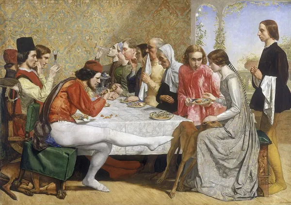
食卓の左右で交わされる手の動きを一つずつ拾いたい。器を渡す仕草と蹴り出す脚が、同じ食卓に親密さと敵意を同居させる。
Isabella
油彩・カンヴァス／ウォーカー・アート・ギャラリー（リバプール）
ジョン・エヴァレット・ミレイ《イザベラ》、1848–1849年。ウォーカー・アート・ギャラリー（リバプール）。画像はWikimedia Commonsの個別ファイルから縮小。
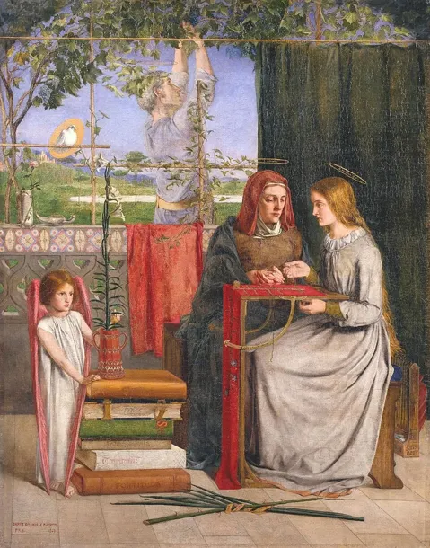
少女の手仕事と百合を並べてみよう。縫うという日常の動作が、聖母の物語を予感させる。
The Girlhood of Mary Virgin
カンヴァスに油彩／テート
ダンテ・ゲイブリエル・ロセッティ《聖母マリアの少女時代》、テート。Wikimedia Commons 個別ファイルの表示は Public domain。掲載用に縮小・WebP変換。
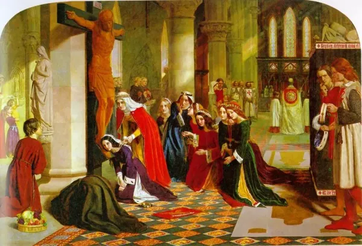
石柱の列が場面を区切る。祭壇の近くで何が起き、それをどの人物が見守っているか、身体の向きから読める。
The Renunciation of St. Elizabeth of Hungary
カンヴァスに油彩／ヨハネスブルグ美術館
ジェイムズ・コリンソン《ハンガリーの聖エリザベトの放棄》、ヨハネスブルグ美術館。Wikimedia Commons 個別ファイルの表示は Public domain。掲載用に縮小・WebP変換。
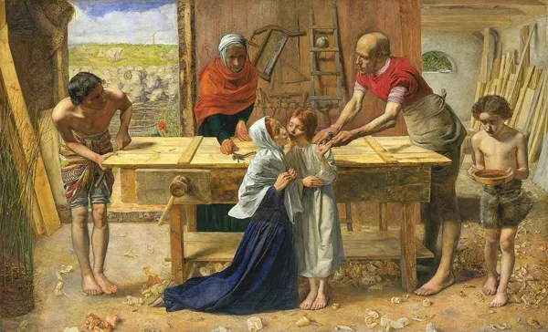
立派な祭壇の代わりに作業台と木材が場所を示す。手元へ人々の視線が集まる構図と、床の木くずを同時に見てみよう。
Christ in the House of His Parents
油彩・カンヴァス／テート
ジョン・エヴァレット・ミレイ《両親の家のキリスト》、1849–1850年。テート。画像はWikimedia Commonsの個別ファイルから縮小。
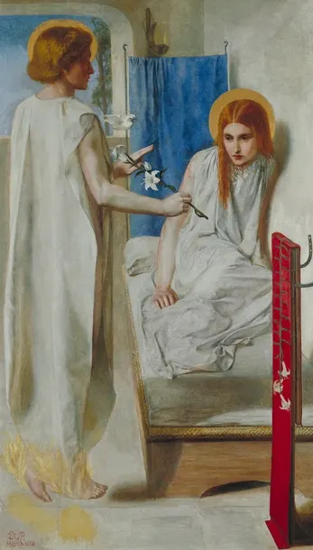
白い壁と衣服が溶け合う中で、細い百合が二人の距離を測る。手前の赤い布は初期作《聖母マリアの少女時代》の手仕事を思い出させる。
Ecce Ancilla Domini! (The Annunciation)
カンヴァスに油彩／テート
ダンテ・ゲイブリエル・ロセッティ《見よ、われは主のはしためなり（受胎告知）》、テート。Wikimedia Commons 個別ファイルの表示は Public domain。掲載用に縮小・WebP変換。
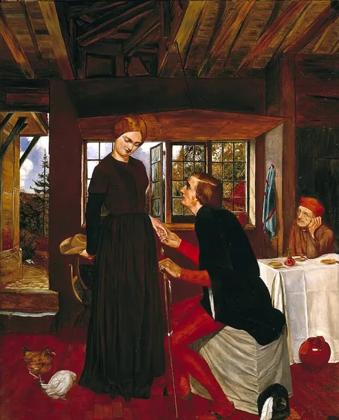
近くの二人の間を視線で行き来してから、窓の向こうの赤い服を探す。私的な場面の外にも物語が続いている。
The Proposal (The Marquis and Griselda)
カンヴァスに油彩／テート
フレデリック・ジョージ・スティーヴンズ《求婚（侯爵とグリゼルダ）》、テート。Wikimedia Commons 個別ファイルの表示は Public domain。掲載用に縮小・WebP変換。
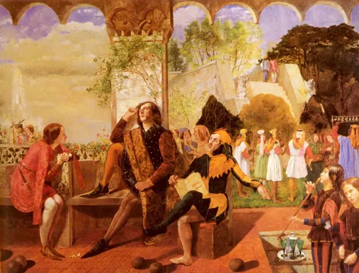
人物たちの顔と楽器を持つ手を順に見る。描かれた音楽に誰が耳を傾け、誰が別の人を見ているかをたどれる。
Twelfth Night, Act II, Scene IV
カンヴァスに油彩／個人蔵（資料記載）
ウォルター・ハウエル・デヴェレル《十二夜、第二幕第四場》、個人蔵（資料記載）。Wikimedia Commons 個別ファイルの表示は Public domain。掲載用に縮小・WebP変換。
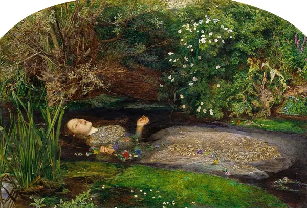
まず顔と手を結んでから、岸辺へ視線を移す。人物の水平な姿勢に対し、茎や枝は水面を横切るいくつもの細い線をつくる。
Ophelia
油彩・カンヴァス／テート
ジョン・エヴァレット・ミレイ《オフィーリア》、1851–1852年。テート。画像はWikimedia Commonsの個別ファイルから縮小。
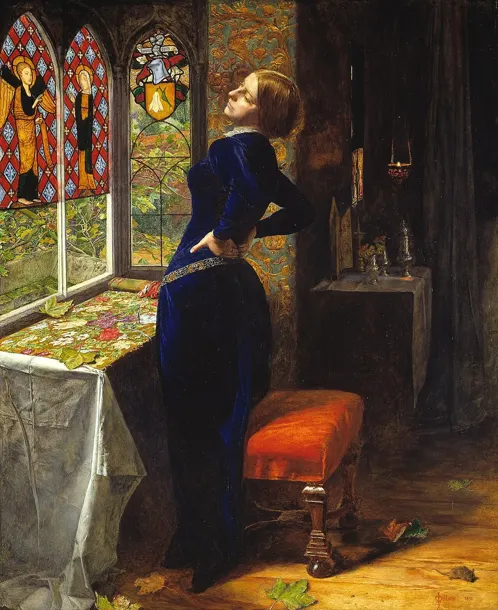
窓の鉛線、刺繡の台、床の模様はかたちを区切る。一方、腰に手を当てて身を反らす姿は、その整った部屋に待ち疲れた時間を持ち込む。
Mariana
油彩・板／テート
ジョン・エヴァレット・ミレイ《マリアナ》、1851年。テート。画像はWikimedia Commonsの個別ファイルから縮小。
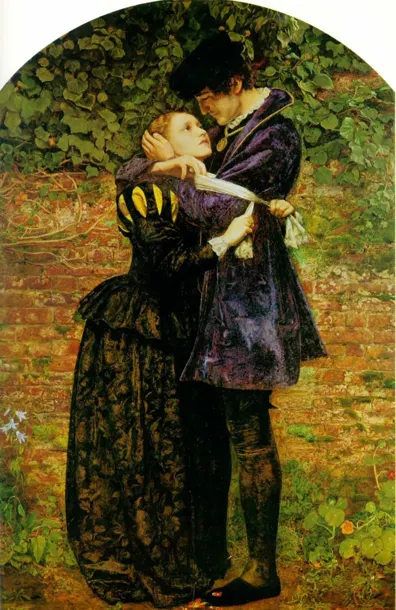
小さな白い布に注目したい。巻きつけようとする手と外そうとする手を重ねて、二人が違う選択をしようとしていることを示す。
A Huguenot, on St. Bartholomew’s Day
油彩・カンヴァス／個人蔵
ジョン・エヴァレット・ミレイ《ユグノー》、1851–1852年。個人蔵。画像はWikimedia Commonsの個別ファイルから縮小。
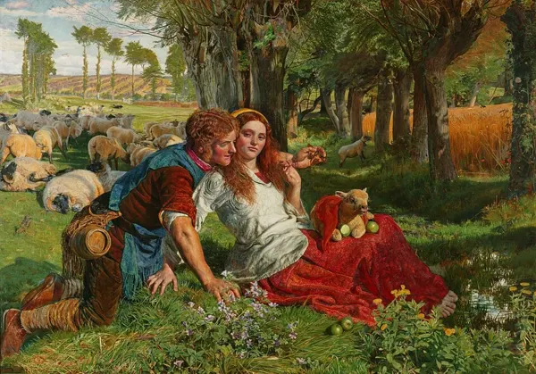
二人の身体がつくる塊から目を離し、画面の奥の羊を数えてみよう。人物の関心と、羊飼いの仕事の向きが食い違う。
The Hireling Shepherd
カンヴァスに油彩／マンチェスター市立美術館
ウィリアム・ホルマン・ハント《雇われ羊飼い》、マンチェスター市立美術館。Wikimedia Commons 個別ファイルの表示は Public domain。掲載用に縮小・WebP変換。
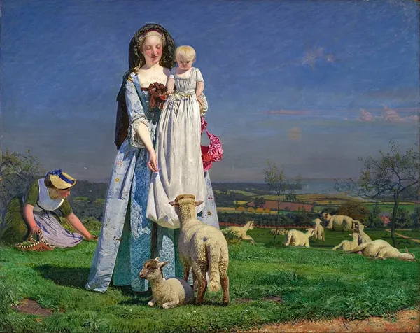
明るい服と羊の背には同じ日差しが当たる。黒く落ちる陰をたどると、屋外の強い光が風景全体に及んでいる。
Pretty Baa-Lambs
板に油彩／バーミンガム美術館
フォード・マドックス・ブラウン《かわいい子羊たち》、バーミンガム美術館。Wikimedia Commons 個別ファイルの表示は Public domain。掲載用に縮小・WebP変換。
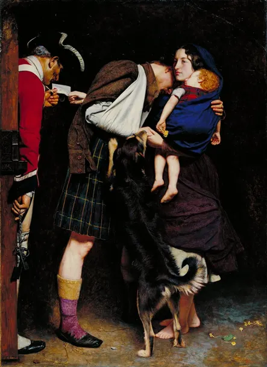
差し出される紙片、包帯の白、眠る子どもを順に見ると、公の決定が一つの家族に届く場面として読める。
The Order of Release, 1746
油彩・カンヴァス／テート
ジョン・エヴァレット・ミレイ《釈放令、1746年》、1852–1853年。テート。画像はWikimedia Commonsの個別ファイルから縮小。
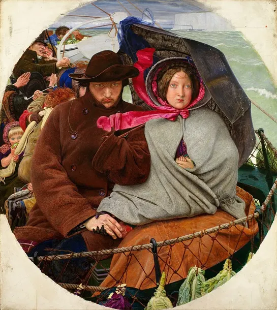
丸みのある画面が二人を囲む。視線は正面へ、リボンは横へ動き、旅立ちの緊張と船上の風を同時に感じさせる。
The Last of England
板に油彩／バーミンガム美術館
フォード・マドックス・ブラウン《イングランドの見納め》、バーミンガム美術館。Wikimedia Commons 個別ファイルの表示は Public domain。掲載用に縮小・WebP変換。
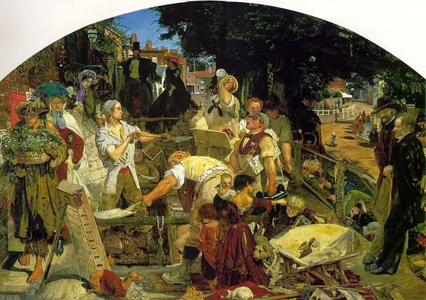
土を掘る腕、見守る身体、通り過ぎる身体を見分ける。職業や暮らしの違いが、一つの道で交わる。
Work
カンヴァスに油彩／マンチェスター市立美術館
フォード・マドックス・ブラウン《労働》、マンチェスター市立美術館。Wikimedia Commons 個別ファイルの表示は Public domain。掲載用に縮小・WebP変換。
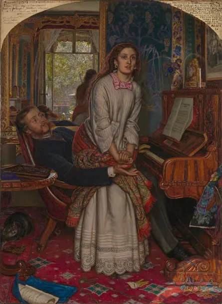
顔と腰と手を順に見ると、身体がまだ部屋に残りながら、気持ちだけが先へ動いたように見える。背後の鏡が室内の奥行きを開く。
The Awakening Conscience
カンヴァスに油彩／テート
ウィリアム・ホルマン・ハント《良心の目覚め》、テート。Wikimedia Commons 個別ファイルの表示は Public domain。掲載用に縮小・WebP変換。
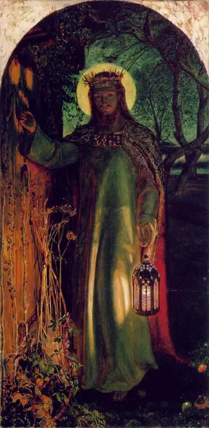
扉の暗い木目、ランタンの輝き、頭の周囲の光を順に見る。光の位置を変えて、一人の立像に複数の見どころをつくっている。
The Light of the World
油彩／オックスフォード大学キーブル・カレッジ
ウィリアム・ホルマン・ハント《世の光》、オックスフォード大学キーブル・カレッジ。Wikimedia Commons 個別ファイルの表示は Public domain。掲載用に縮小・WebP変換。
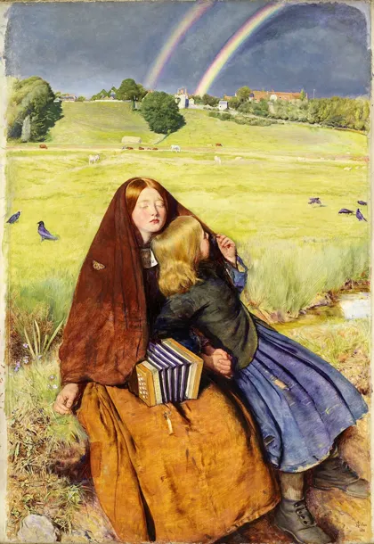
空の虹に先に目を奪われたら、今度は手前の手と顔の向きを見る。景色を眺めることと、風や草に触れて場所を感じることを重ねる構図だ。
The Blind Girl
油彩・カンヴァス／バーミンガム美術館
ジョン・エヴァレット・ミレイ《盲目の少女》、1854–1856年。バーミンガム美術館。画像はWikimedia Commonsの個別ファイルから縮小。
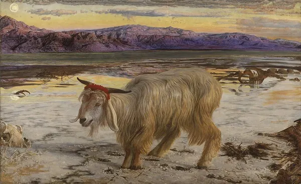
背中を横に走る線と、遠くの山の稜線を見比べる。画面の広さに対して、一頭の身体がどれほど孤立して見えるだろう。
The Scapegoat
油彩／レディ・リーヴァー美術館
ウィリアム・ホルマン・ハント《贖罪の山羊》、レディ・リーヴァー美術館。Wikimedia Commons 個別ファイルの表示は Public domain。掲載用に縮小・WebP変換。
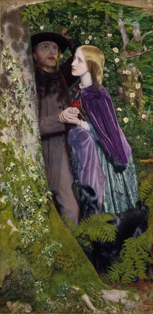
人物を隠しかける太い幹に注目したい。恋人たちのそばで育つ木が、題名にある「長い」という時間を感じさせる。
The Long Engagement
カンヴァスに油彩／バーミンガム美術館
アーサー・ヒューズ《長い婚約》、バーミンガム美術館。Wikimedia Commons 個別ファイルの表示は Public domain。掲載用に縮小・WebP変換。
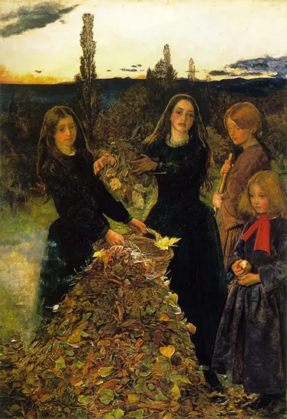
顔の明るさ、葉の赤茶、消えかかった空の光を比べてみよう。はっきりした事件を描かず、日が沈んでゆく短い時間を色で伝える。
Autumn Leaves
油彩・カンヴァス／マンチェスター市立美術館
ジョン・エヴァレット・ミレイ《秋の落葉》、1855–1856年。マンチェスター市立美術館。画像はWikimedia Commonsの個別ファイルから縮小。
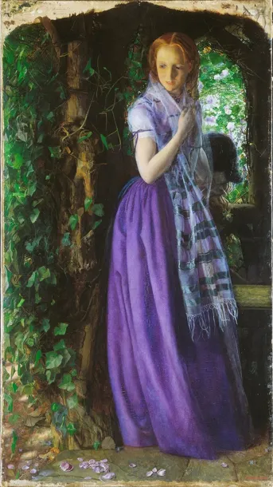
明るいドレスを先に見てから、枝の奥の人物を探す。二人が同じ場にいることが、少し遅れて分かる構成である。
April Love
カンヴァスに油彩／テート
アーサー・ヒューズ《四月の恋》、テート。Wikimedia Commons 個別ファイルの表示は Public domain。掲載用に縮小・WebP変換。
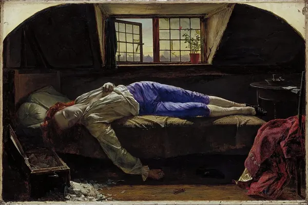
身体の長い水平線を、垂れた腕の線が断ち切る。窓の外の明るさが、静かな室内を際立たせる。
Chatterton
カンヴァスに油彩／テート
ヘンリー・ウォリス《チャタートン》、テート。Wikimedia Commons 個別ファイルの表示は Public domain。掲載用に縮小・WebP変換。
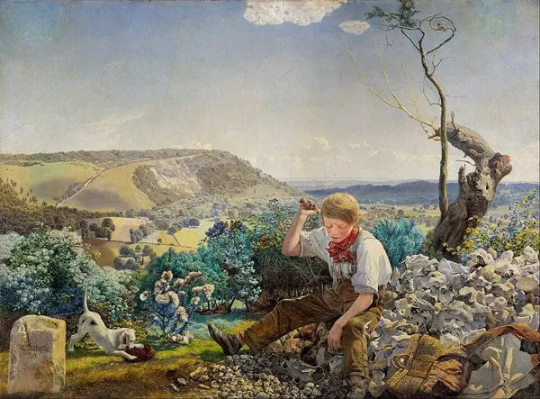
手前の鋭い石の輪郭から、遠くの緩い丘の輪郭へ目を移す。一人の労働と広い地形を同じ画面の中で扱っている。
The Stonebreaker
カンヴァスに油彩／ウォーカー美術館
ジョン・ブレット《石割り》、ウォーカー美術館。Wikimedia Commons 個別ファイルの表示は Public domain。掲載用に縮小・WebP変換。
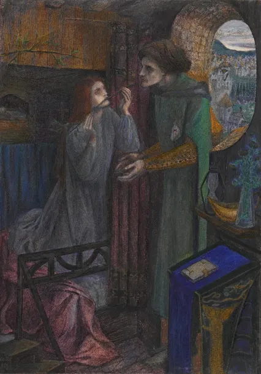
右の丸窓と左下の寝具を見比べると、背の高い二人が立つ部屋の狭さがわかる。薄い衣と濃い衣の違いにも目を向けたい。
Clerk Saunders
紙に水彩、不透明水彩、色チョーク／フィッツウィリアム美術館（680）
エリザベス・シダル《書記ソーンダーズ》。フィッツウィリアム美術館（680）。図版：Birmingham Culture, Flickr / Wikimedia Commons, CC BY 2.0。WebP化。
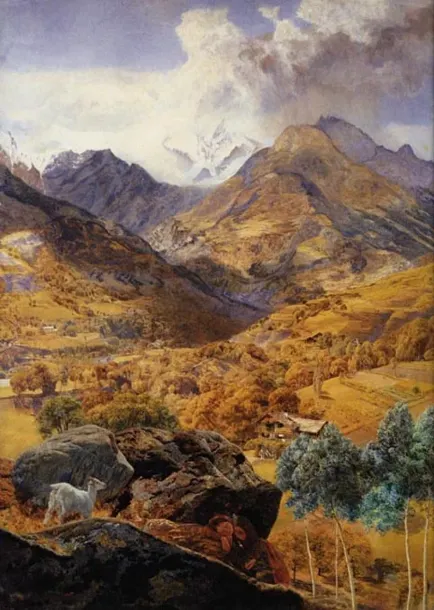
近い岩肌、中ほどの集落、遠い雪山を追う。距離を分けるために使われた色と、描き込みの細かさを見比べよう。
Val d’Aosta
カンヴァスに油彩／個人蔵（資料記載）
ジョン・ブレット《アオスタの谷》、個人蔵（資料記載）。Wikimedia Commons 個別ファイルの表示は Public domain。掲載用に縮小・WebP変換。

正面を大きく占める絵には、ゲーム盤を挟む二人が向かい合う。視線を下に移すと脚の間が大きく開く。革に描いた物語と、部屋の中で立つ家具の軽さを一緒に味わいたい。
The Backgammon Players
松材に彩色、革に油彩、真鍮、銅／メトロポリタン美術館
The Backgammon Players. The Metropolitan Museum of Art, Rogers Fund, 1926, 26.54. CC0.
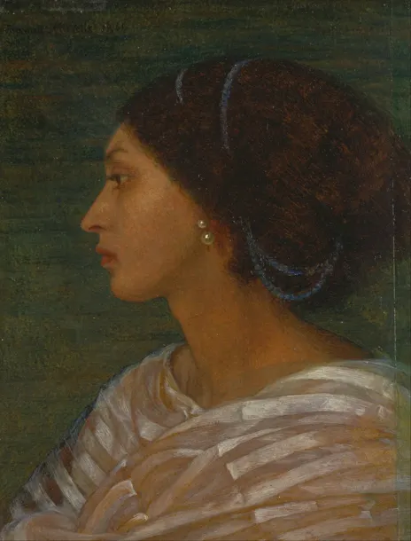
髪飾りの細い線と、肩の布を描く幅広い筆跡に着目する。耳元から肩へ移るだけで、画面の手触りが変わる。
Study of Mrs. Fanny Eaton
麻布に貼った紙に油彩／イェール英国美術センター（B1991.29）
ジョアンナ・ボイス・ウェルズ《ファニー・イートンの習作》。イェール英国美術センター（B1991.29）。図版：Wikimedia Commons。
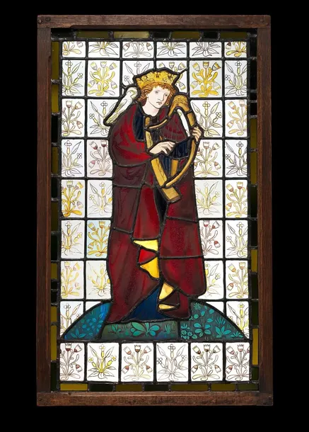
赤い衣の大きな面から、背後の細かな草花へと目を移す。人物と背景は別々の作家が設計した。鉛線はガラスをつなぐ継ぎ目であると同時に、服や模様の輪郭にもなる。
King David the Poet
ステンドグラス／メトロポリタン美術館
King David the Poet. The Metropolitan Museum of Art, Purchase, Rogers Fund, Gifts of Dr. and Mrs. John C. Weber, Helen O. Brice, and Mrs. Donald Gill, by exchange, and funds from various donors, by exchange, 1998, 1998.231. CC0.
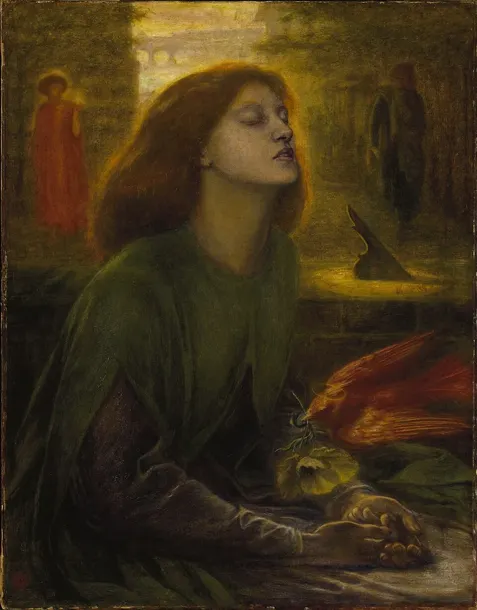
顔のすぐそばに鳥を置かず、視線を手元まで下ろす。霞んだ遠景の人物と、光を受ける横顔の鮮明さも比べたい。
Beata Beatrix
カンヴァスに油彩／テート
ダンテ・ゲイブリエル・ロセッティ《ベアタ・ベアトリクス》、テート。Wikimedia Commons 個別ファイルの表示は Public domain。掲載用に縮小・WebP変換。
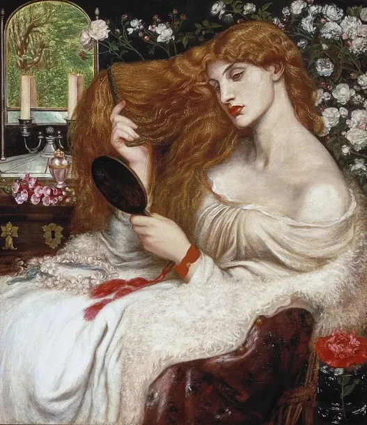
髪は人物の属性であると同時に、画面を横切る幅広い色面でもある。鏡の丸みから髪のうねりへ、目が移る。
Lady Lilith
カンヴァスに油彩／デラウェア美術館
ダンテ・ゲイブリエル・ロセッティ《レディ・リリス》、デラウェア美術館。Wikimedia Commons 個別ファイルの表示は Public domain。掲載用に縮小・WebP変換。
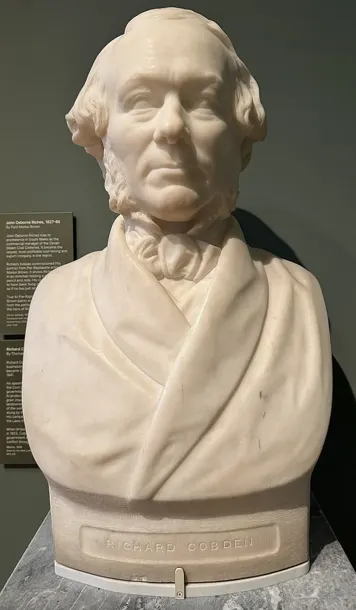
立体では、色面の代わりに凹凸が明暗をつくる。頬に落ちる陰と襟の深い折り目で、同じ石の表情を見比べられる。
Richard Cobden
大理石／ナショナル・ポートレート・ギャラリー（ロンドン）
トマス・ウールナー《リチャード・コブデンの胸像》、ナショナル・ポートレート・ギャラリー（ロンドン）。撮影 APK。CC BY 4.0。掲載用に縮小・WebP変換。
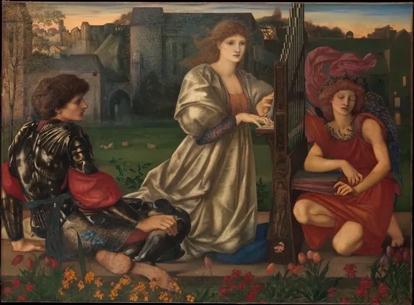
画面右のキューピッドはオルガンのふいごを動かす。手と楽器が重なる位置を追うと、聞こえない音が三人を結ぶ。人物を取り巻く輪郭の強さを、同じ画家のステンドグラスと見比べよう。
The Love Song
カンヴァスに油彩／メトロポリタン美術館
The Love Song. The Metropolitan Museum of Art, The Alfred N. Punnett Endowment Fund, 1947, 47.26. CC0.
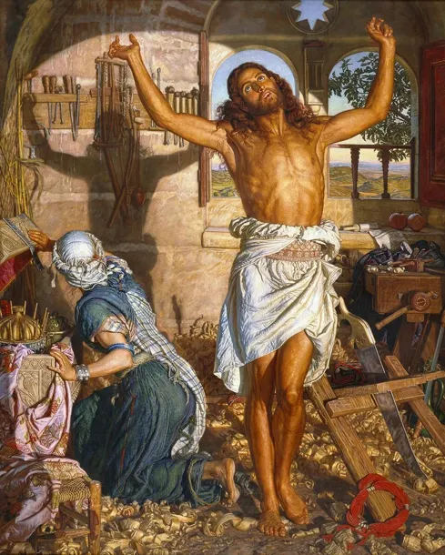
伸びをする身体と壁の影を交互に見る。同じ腕の形が、日常の動作と将来の受難という二つの時間を表す。
The Shadow of Death
カンヴァスに油彩／マンチェスター市立美術館
ウィリアム・ホルマン・ハント《死の影》、マンチェスター市立美術館。Wikimedia Commons 個別ファイルの表示は Public domain。掲載用に縮小・WebP変換。
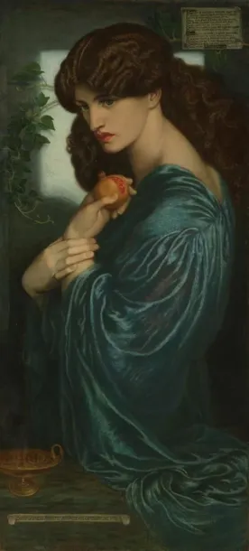
ざくろの断面は小さいのに、暗い衣の中で鮮やかに見える。物語を担う一つの果実に、画面の重みを集めている。
Proserpine
カンヴァスに油彩／テート
ダンテ・ゲイブリエル・ロセッティ《プロセルピナ》、テート。Wikimedia Commons 個別ファイルの表示は Public domain。掲載用に縮小・WebP変換。
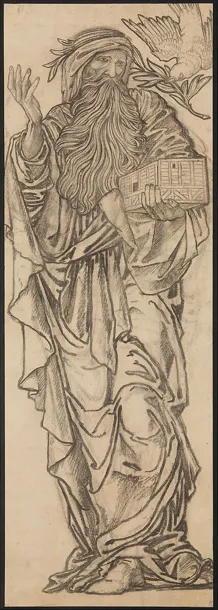
ケンブリッジの礼拝堂の窓に向けた下絵。木炭で引いた衣の線をたどると、細い窓の幅の中で、布のひだだけでも人物の体の向きを表せることが分かる。
Noah
木炭／メトロポリタン美術館
Noah. The Metropolitan Museum of Art, Harris Brisbane Dick Fund, 1948, 48.52. CC0.
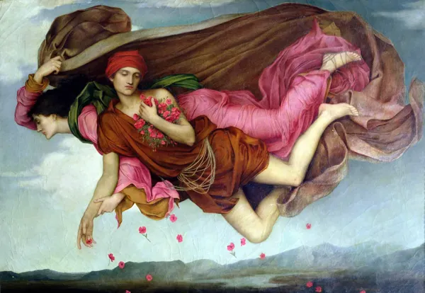
頭上で広がる暗い布と、下へこぼれる小さな花。眠りが訪れるという時間の変化を、布の広さと花の落ちる向きで描いている。
Night and Sleep
カンヴァスに油彩／ド・モーガン財団
イーヴリン・ド・モーガン《夜と眠り》。ド・モーガン財団。図版：Wikimedia Commons。
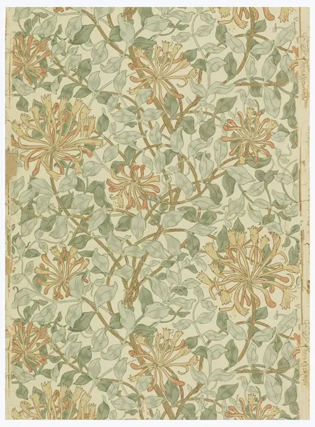
枝が何本も重なって見えるところで、一本の茎だけを目で追ってみよう。葉の向きが変わるたびに、同じ柄が続く面に奥行きが生まれる。
Honeysuckle
紙に木版刷り／クーパー・ヒューイット・スミソニアン・デザイン博物館
May Morris, Honeysuckle, 1883. Cooper Hewitt, Smithsonian Design Museum, Gift of Dr. Francis J. Geck, 1980-73-1. Photo: Matt Flynn. CC0.
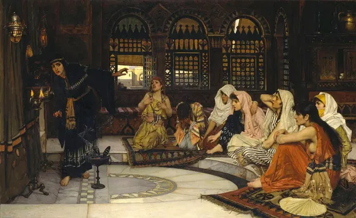
人物を弧のように並べて、離れた位置からも注意が一か所に集まるようにしている。手前の床の余白を隠すと、輪の広さがどう変わるだろう。
Consulting the Oracle
油彩・カンヴァス／テート
ジョン・ウィリアム・ウォーターハウス《神託を伺う》、1884年。テート。画像はWikimedia Commonsの個別ファイルから縮小。
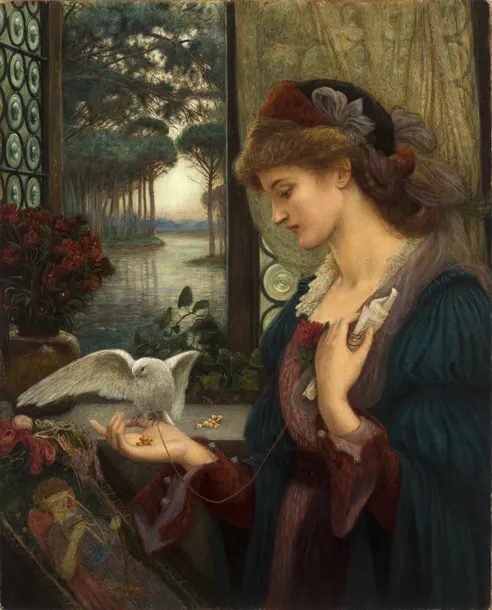
女性の視線を追うと、鳩が運ぶ手紙に行き着く。手前の刺繡にも恋の使者キューピッドがいて、鳥と針仕事が同じ話の中につながる。
Love’s Messenger
板に貼った紙に水彩、テンペラ、金彩／デラウェア美術館（1935-75）
マリー・スパルタリ・スティルマン《愛の使者》。デラウェア美術館（1935-75）。図版：Wikimedia Commons。
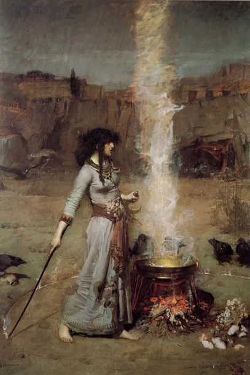
煙の縦線と、地面に引かれる円の輪郭を見比べる。風景の中に、儀式を行う人だけの領域が区切られていく。
The Magic Circle
油彩・カンヴァス／テート
ジョン・ウィリアム・ウォーターハウス《魔法円》、1886年。テート。画像はWikimedia Commonsの個別ファイルから縮小。
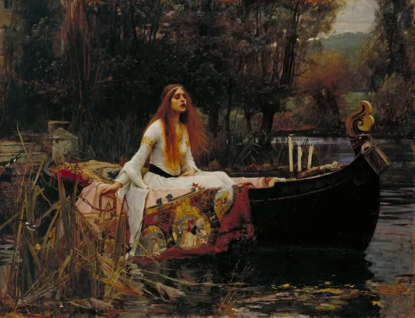
長い舟は画面を横切り、女性の白い衣はそこから立ち上がる。舟べりの織物まで目を移すと、人物が生きてきた室内の仕事が屋外の場面に持ち込まれている。
The Lady of Shalott
油彩・カンヴァス／テート
ジョン・ウィリアム・ウォーターハウス《シャロットの女》、1888年。テート。画像はWikimedia Commonsの個別ファイルから縮小。
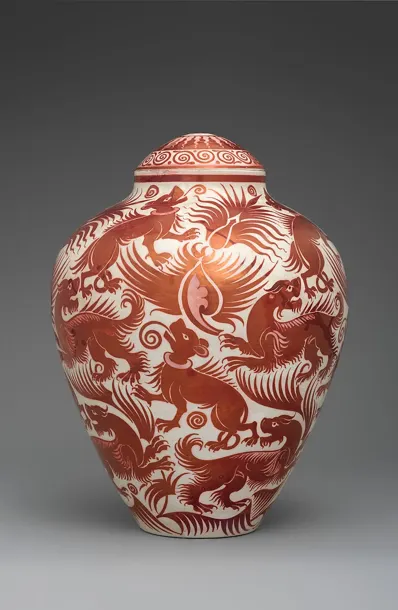
膨らんだ胴の左右では文様が曲面の奥に隠れる。皿の図案と見比べると、同じ工房が平らな面と立体の面で、見る人の視線をどう運んだかが分かる。
Vase with cover
陶器／メトロポリタン美術館
Vase with cover. The Metropolitan Museum of Art, Purchase, Edward C. Moore Jr. Gift, 1923, 23.163.2ab. CC0.
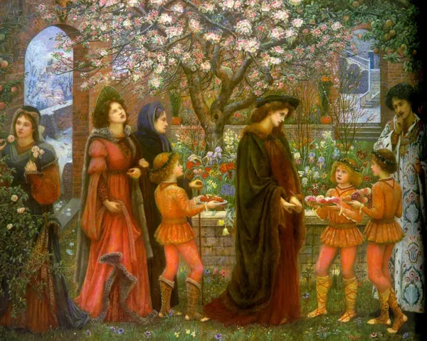
左の赤い衣から花の木を通り、右の子どもたちの服へ。赤や桃色を探すと、横長の画面を端まで歩くように視線が動く。
The Enchanted Garden of Messer Ansaldo
紙に鉛筆、水彩、不透明水彩、アラビアゴム／所蔵先未確認（クリスティーズに作品記録）
マリー・スパルタリ・スティルマン《アンサルド殿の魔法の庭》。所蔵先未確認（クリスティーズに作品記録）。図版：Wikimedia Commons。
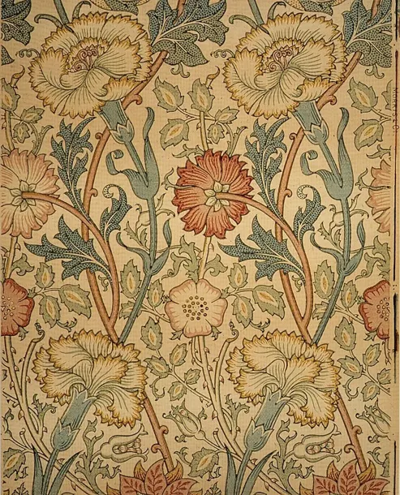
一輪の花を選んで、同じ花が次にどこに現れるかを探す。波打つ茎と葉が一つのまとまりを次のまとまりに結び、絵の端でも柄が続くように見える。
Pink and Rose
紙に膠絵具による木版刷り／メトロポリタン美術館
Pink and Rose. The Metropolitan Museum of Art, Purchase, Edward C. Moore Jr. Gift, 1923, 23.163.4a. CC0.
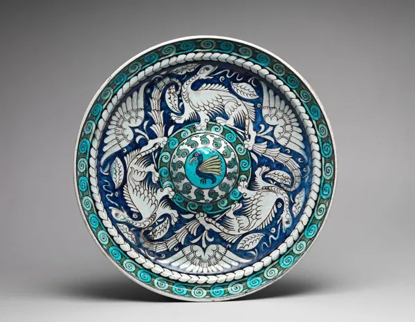
一頭の竜の体に沿って目で線を引いてみる。円周に沿って体を曲げたことで、隣り合う竜の翼や尾が、皿全体を回る模様に変わっている。
Plate
陶器／メトロポリタン美術館
Plate. The Metropolitan Museum of Art, Purchase, Edward C. Moore Jr. Gift, 1923, 23.163.1. CC0.
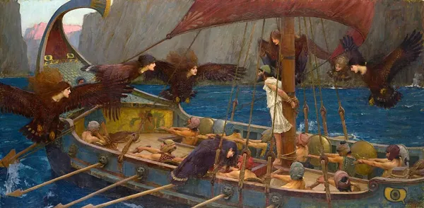
船と櫂は画面の端へ伸びるのに、翼の群れは四方から船へ迫る。横長の画面に、進もうとする力と引き留める力が同居する。
Ulysses and the Sirens
油彩・カンヴァス／ビクトリア国立美術館
ジョン・ウィリアム・ウォーターハウス《ユリシーズとセイレーン》、1891年。ビクトリア国立美術館。画像はWikimedia Commonsの個別ファイルから縮小。
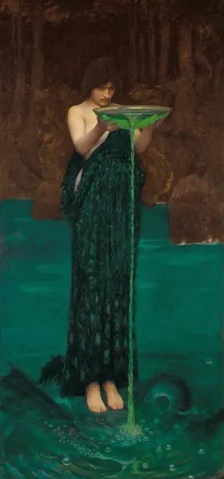
顔、持ち上げた器、足元の水へと、細長い画面を上から下に読む。緑が衣と水を結び、注いだものが広がる先まで視線を運ぶ。
Circe Invidiosa
油彩・カンヴァス／南オーストラリア美術館
ジョン・ウィリアム・ウォーターハウス《嫉妬するキルケ》、1892年。南オーストラリア美術館。画像はWikimedia Commonsの個別ファイルから縮小。
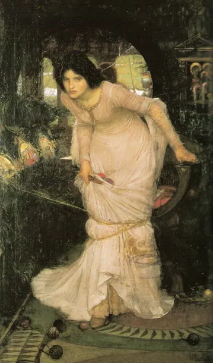
1888年の舟の場面と見比べよう。ここでは織機の糸が人物の動きにからみ、物語が変わる瞬間を室内の道具で目に見えるものにする。
The Lady of Shalott Looking at Lancelot
油彩・カンヴァス／リーズ・アート・ギャラリー
ジョン・ウィリアム・ウォーターハウス《ランスロットを見るシャロットの女》、1894年。リーズ・アート・ギャラリー。画像はWikimedia Commonsの個別ファイルから縮小。
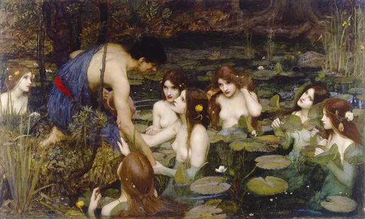
青年が伸ばす腕の先から、一人ずつ顔をたどってみよう。似た高さに並ぶ顔と水面に繰り返す睡蓮の葉が、視線を池の奥へ招き入れる。
Hylas and the Nymphs
油彩・カンヴァス／マンチェスター市立美術館
ジョン・ウィリアム・ウォーターハウス《ヒュラスとニンフたち》、1896年。マンチェスター市立美術館。画像はWikimedia Commonsの個別ファイルから縮小。
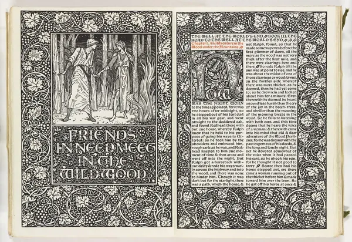
左頁の人物を囲む葉と、右頁の文字を囲む葉を見比べたい。挿絵と活字は別の技術で作られたが、縁飾りの密度をそろえることで、見開き全体が一つの場面に見える。
The Well at the World's End
木版挿絵入り書籍／メトロポリタン美術館
The Well at the World's End. The Metropolitan Museum of Art, Harris Brisbane Dick Fund, 1917, 17.3.2641(13). CC0.

左の欄外見出しと右段の短い見出しだけが赤くなっています。黒い本文と役割を分け、装飾と情報の区切りを同じ紙面で働かせています。
A Leaf from the Kelmscott Chaucer
紙に活版・木版／ナショナル・ギャラリー・オブ・アート（米国）
William Morris, A Leaf from the Kelmscott Chaucer, published 1896, p.288. Gift of William B. O’Neal, 1987.73.3. Courtesy National Gallery of Art, Washington. CC0.
エコーは青年を見ているが、青年の目は水面へ向かう。岸を挟んで二人を並べることで、視線が返ってこない物語を一枚に収めている。
Echo and Narcissus
油彩・カンヴァス／ウォーカー・アート・ギャラリー（リバプール）
ジョン・ウィリアム・ウォーターハウス《エコーとナルキッソス》、1903年。ウォーカー・アート・ギャラリー（リバプール）。画像はWikimedia Commonsの個別ファイルから縮小。
液体を注ぐ二つの手は、衣の大きなひだに比べて小さい。黒猫、棚の本、窓越しの人物まで視線を巡らせると、一つの動作の周りに物語の手がかりが集まってくる。
The Love Potion
カンヴァスに油彩／ド・モーガン財団（P_EDM_0035）
イーヴリン・ド・モーガン《媚薬》。ド・モーガン財団（P_EDM_0035）。図版：Wikimedia Commons。
二人の顔から肩、腕、裾へと線を追う。褐色の濃淡だけで、手前の衣と奥の戸口が離れて見える。
Lady Clare
紙に黒鉛、ペン、インク、褐色と黒の淡彩／フィッツウィリアム美術館（777）
エリザベス・シダル《レディ・クレア》。フィッツウィリアム美術館（777）。図版：Wikimedia Commons。
二人の顔と手の間に台がある。衣のひだや顔が描き込まれた部分と、背景を示す薄い線の差から、構図を組み立てる順序を想像できる。
Study for The Tempest, Ferdinand and Miranda Playing Chess
紙にチョーク（素描）／所蔵先未確認（クリスティーズに作品記録）
ルーシー・マドックス・ブラウン《『テンペスト』のための習作――チェスをするファーディナンドとミランダ》。所蔵先未確認（クリスティーズに作品記録）。図版：Wikimedia Commons。
油彩・カンヴァス
食卓の左右で交わされる手の動きを一つずつ拾いたい。器を渡す仕草と蹴り出す脚が、同じ食卓に親密さと敵意を同居させる。
作品・資料の出典を見る ↗原題：Isabella
ジョン・エヴァレット・ミレイ / 1848–1849 / 油彩・カンヴァス
カンヴァスに油彩
少女の手仕事と百合を並べてみよう。縫うという日常の動作が、聖母の物語を予感させる。
作品・資料の出典を見る ↗原題：The Girlhood of Mary Virgin
ダンテ・ゲイブリエル・ロセッティ / 1848–49 / カンヴァスに油彩
カンヴァスに油彩
石柱の列が場面を区切る。祭壇の近くで何が起き、それをどの人物が見守っているか、身体の向きから読める。
作品・資料の出典を見る ↗原題：The Renunciation of St. Elizabeth of Hungary
ジェイムズ・コリンソン / 1848–50 / カンヴァスに油彩
油彩・カンヴァス
立派な祭壇の代わりに作業台と木材が場所を示す。手元へ人々の視線が集まる構図と、床の木くずを同時に見てみよう。
作品・資料の出典を見る ↗原題：Christ in the House of His Parents
ジョン・エヴァレット・ミレイ / 1849–1850 / 油彩・カンヴァス
カンヴァスに油彩
白い壁と衣服が溶け合う中で、細い百合が二人の距離を測る。手前の赤い布は初期作《聖母マリアの少女時代》の手仕事を思い出させる。
作品・資料の出典を見る ↗原題：Ecce Ancilla Domini! (The Annunciation)
ダンテ・ゲイブリエル・ロセッティ / 1849–50 / カンヴァスに油彩
カンヴァスに油彩
近くの二人の間を視線で行き来してから、窓の向こうの赤い服を探す。私的な場面の外にも物語が続いている。
作品・資料の出典を見る ↗原題：The Proposal (The Marquis and Griselda)
フレデリック・ジョージ・スティーヴンズ / 1850年頃 / カンヴァスに油彩
カンヴァスに油彩
人物たちの顔と楽器を持つ手を順に見る。描かれた音楽に誰が耳を傾け、誰が別の人を見ているかをたどれる。
作品・資料の出典を見る ↗原題：Twelfth Night, Act II, Scene IV
ウォルター・ハウエル・デヴェレル / 1850 / カンヴァスに油彩
油彩・カンヴァス
まず顔と手を結んでから、岸辺へ視線を移す。人物の水平な姿勢に対し、茎や枝は水面を横切るいくつもの細い線をつくる。
作品・資料の出典を見る ↗原題：Ophelia
ジョン・エヴァレット・ミレイ / 1851–1852 / 油彩・カンヴァス
油彩・板
窓の鉛線、刺繡の台、床の模様はかたちを区切る。一方、腰に手を当てて身を反らす姿は、その整った部屋に待ち疲れた時間を持ち込む。
作品・資料の出典を見る ↗原題：Mariana
ジョン・エヴァレット・ミレイ / 1851 / 油彩・板
油彩・カンヴァス
小さな白い布に注目したい。巻きつけようとする手と外そうとする手を重ねて、二人が違う選択をしようとしていることを示す。
作品・資料の出典を見る ↗原題：A Huguenot, on St. Bartholomew’s Day
ジョン・エヴァレット・ミレイ / 1851–1852 / 油彩・カンヴァス
カンヴァスに油彩
二人の身体がつくる塊から目を離し、画面の奥の羊を数えてみよう。人物の関心と、羊飼いの仕事の向きが食い違う。
作品・資料の出典を見る ↗原題：The Hireling Shepherd
ウィリアム・ホルマン・ハント / 1851 / カンヴァスに油彩
板に油彩
明るい服と羊の背には同じ日差しが当たる。黒く落ちる陰をたどると、屋外の強い光が風景全体に及んでいる。
作品・資料の出典を見る ↗原題：Pretty Baa-Lambs
フォード・マドックス・ブラウン / 1851–59 / 板に油彩
油彩・カンヴァス
差し出される紙片、包帯の白、眠る子どもを順に見ると、公の決定が一つの家族に届く場面として読める。
作品・資料の出典を見る ↗原題：The Order of Release, 1746
ジョン・エヴァレット・ミレイ / 1852–1853 / 油彩・カンヴァス
板に油彩
丸みのある画面が二人を囲む。視線は正面へ、リボンは横へ動き、旅立ちの緊張と船上の風を同時に感じさせる。
作品・資料の出典を見る ↗原題：The Last of England
フォード・マドックス・ブラウン / 1852–55 / 板に油彩
カンヴァスに油彩
土を掘る腕、見守る身体、通り過ぎる身体を見分ける。職業や暮らしの違いが、一つの道で交わる。
作品・資料の出典を見る ↗原題：Work
フォード・マドックス・ブラウン / 1852–65 / カンヴァスに油彩
カンヴァスに油彩
顔と腰と手を順に見ると、身体がまだ部屋に残りながら、気持ちだけが先へ動いたように見える。背後の鏡が室内の奥行きを開く。
作品・資料の出典を見る ↗原題：The Awakening Conscience
ウィリアム・ホルマン・ハント / 1853 / カンヴァスに油彩
油彩
扉の暗い木目、ランタンの輝き、頭の周囲の光を順に見る。光の位置を変えて、一人の立像に複数の見どころをつくっている。
作品・資料の出典を見る ↗原題：The Light of the World
ウィリアム・ホルマン・ハント / 1853 / 油彩
油彩・カンヴァス
空の虹に先に目を奪われたら、今度は手前の手と顔の向きを見る。景色を眺めることと、風や草に触れて場所を感じることを重ねる構図だ。
作品・資料の出典を見る ↗原題：The Blind Girl
ジョン・エヴァレット・ミレイ / 1854–1856 / 油彩・カンヴァス
油彩
背中を横に走る線と、遠くの山の稜線を見比べる。画面の広さに対して、一頭の身体がどれほど孤立して見えるだろう。
作品・資料の出典を見る ↗原題：The Scapegoat
ウィリアム・ホルマン・ハント / 1854–55 / 油彩
カンヴァスに油彩
人物を隠しかける太い幹に注目したい。恋人たちのそばで育つ木が、題名にある「長い」という時間を感じさせる。
作品・資料の出典を見る ↗原題：The Long Engagement
アーサー・ヒューズ / 1854–59 / カンヴァスに油彩
油彩・カンヴァス
顔の明るさ、葉の赤茶、消えかかった空の光を比べてみよう。はっきりした事件を描かず、日が沈んでゆく短い時間を色で伝える。
作品・資料の出典を見る ↗原題：Autumn Leaves
ジョン・エヴァレット・ミレイ / 1855–1856 / 油彩・カンヴァス
カンヴァスに油彩
明るいドレスを先に見てから、枝の奥の人物を探す。二人が同じ場にいることが、少し遅れて分かる構成である。
作品・資料の出典を見る ↗原題：April Love
アーサー・ヒューズ / 1855–56 / カンヴァスに油彩
カンヴァスに油彩
身体の長い水平線を、垂れた腕の線が断ち切る。窓の外の明るさが、静かな室内を際立たせる。
作品・資料の出典を見る ↗原題：Chatterton
ヘンリー・ウォリス / 1856 / カンヴァスに油彩
カンヴァスに油彩
手前の鋭い石の輪郭から、遠くの緩い丘の輪郭へ目を移す。一人の労働と広い地形を同じ画面の中で扱っている。
作品・資料の出典を見る ↗原題：The Stonebreaker
ジョン・ブレット / 1857–58 / カンヴァスに油彩
紙に水彩、不透明水彩、色チョーク
右の丸窓と左下の寝具を見比べると、背の高い二人が立つ部屋の狭さがわかる。薄い衣と濃い衣の違いにも目を向けたい。
作品・資料の出典を見る ↗原題：Clerk Saunders
エリザベス・シダル / 1857年 / 紙に水彩、不透明水彩、色チョーク
カンヴァスに油彩
近い岩肌、中ほどの集落、遠い雪山を追う。距離を分けるために使われた色と、描き込みの細かさを見比べよう。
作品・資料の出典を見る ↗原題：Val d’Aosta
ジョン・ブレット / 1858 / カンヴァスに油彩
松材に彩色、革に油彩、真鍮、銅
正面を大きく占める絵には、ゲーム盤を挟む二人が向かい合う。視線を下に移すと脚の間が大きく開く。革に描いた物語と、部屋の中で立つ家具の軽さを一緒に味わいたい。
作品・資料の出典を見る ↗原題：The Backgammon Players
フィリップ・ウェッブ（家具設計）、エドワード・バーン＝ジョーンズ（絵）、モリス・マーシャル・フォークナー商会（制作） / 1861年 / 松材に彩色、革に油彩、真鍮、銅
麻布に貼った紙に油彩
髪飾りの細い線と、肩の布を描く幅広い筆跡に着目する。耳元から肩へ移るだけで、画面の手触りが変わる。
作品・資料の出典を見る ↗原題：Study of Mrs. Fanny Eaton
ジョアンナ・ボイス・ウェルズ / 1861年 / 麻布に貼った紙に油彩
ステンドグラス
赤い衣の大きな面から、背後の細かな草花へと目を移す。人物と背景は別々の作家が設計した。鉛線はガラスをつなぐ継ぎ目であると同時に、服や模様の輪郭にもなる。
作品・資料の出典を見る ↗原題：King David the Poet
エドワード・バーン＝ジョーンズ（人物）、ウィリアム・モリス（背景）、モリス・マーシャル・フォークナー商会（制作） / 1863年 / ステンドグラス
カンヴァスに油彩
顔のすぐそばに鳥を置かず、視線を手元まで下ろす。霞んだ遠景の人物と、光を受ける横顔の鮮明さも比べたい。
作品・資料の出典を見る ↗原題：Beata Beatrix
ダンテ・ゲイブリエル・ロセッティ / 1864–70年頃 / カンヴァスに油彩
カンヴァスに油彩
髪は人物の属性であると同時に、画面を横切る幅広い色面でもある。鏡の丸みから髪のうねりへ、目が移る。
作品・資料の出典を見る ↗原題：Lady Lilith
ダンテ・ゲイブリエル・ロセッティ / 1866–68、1872–73年改作 / カンヴァスに油彩
大理石
立体では、色面の代わりに凹凸が明暗をつくる。頬に落ちる陰と襟の深い折り目で、同じ石の表情を見比べられる。
作品・資料の出典を見る ↗原題：Richard Cobden
トマス・ウールナー / 1866 / 大理石
カンヴァスに油彩
画面右のキューピッドはオルガンのふいごを動かす。手と楽器が重なる位置を追うと、聞こえない音が三人を結ぶ。人物を取り巻く輪郭の強さを、同じ画家のステンドグラスと見比べよう。
作品・資料の出典を見る ↗原題：The Love Song
エドワード・バーン＝ジョーンズ / 1868–1877年 / カンヴァスに油彩
カンヴァスに油彩
伸びをする身体と壁の影を交互に見る。同じ腕の形が、日常の動作と将来の受難という二つの時間を表す。
作品・資料の出典を見る ↗原題：The Shadow of Death
ウィリアム・ホルマン・ハント / 1870–73 / カンヴァスに油彩
カンヴァスに油彩
ざくろの断面は小さいのに、暗い衣の中で鮮やかに見える。物語を担う一つの果実に、画面の重みを集めている。
作品・資料の出典を見る ↗原題：Proserpine
ダンテ・ゲイブリエル・ロセッティ / 1874 / カンヴァスに油彩
木炭
ケンブリッジの礼拝堂の窓に向けた下絵。木炭で引いた衣の線をたどると、細い窓の幅の中で、布のひだだけでも人物の体の向きを表せることが分かる。
作品・資料の出典を見る ↗原題：Noah
エドワード・バーン＝ジョーンズ / 1874年2月1日 / 木炭
カンヴァスに油彩
頭上で広がる暗い布と、下へこぼれる小さな花。眠りが訪れるという時間の変化を、布の広さと花の落ちる向きで描いている。
作品・資料の出典を見る ↗原題：Night and Sleep
イーヴリン・ド・モーガン / 1878年 / カンヴァスに油彩
紙に木版刷り
枝が何本も重なって見えるところで、一本の茎だけを目で追ってみよう。葉の向きが変わるたびに、同じ柄が続く面に奥行きが生まれる。
作品・資料の出典を見る ↗原題：Honeysuckle
メイ・モリス（図案）、モリス商会（製作） / 1883年 / 紙に木版刷り
油彩・カンヴァス
人物を弧のように並べて、離れた位置からも注意が一か所に集まるようにしている。手前の床の余白を隠すと、輪の広さがどう変わるだろう。
作品・資料の出典を見る ↗原題：Consulting the Oracle
ジョン・ウィリアム・ウォーターハウス / 1884 / 油彩・カンヴァス
板に貼った紙に水彩、テンペラ、金彩
女性の視線を追うと、鳩が運ぶ手紙に行き着く。手前の刺繡にも恋の使者キューピッドがいて、鳥と針仕事が同じ話の中につながる。
作品・資料の出典を見る ↗原題：Love’s Messenger
マリー・スパルタリ・スティルマン / 1885年 / 板に貼った紙に水彩、テンペラ、金彩
油彩・カンヴァス
煙の縦線と、地面に引かれる円の輪郭を見比べる。風景の中に、儀式を行う人だけの領域が区切られていく。
作品・資料の出典を見る ↗原題：The Magic Circle
ジョン・ウィリアム・ウォーターハウス / 1886 / 油彩・カンヴァス
油彩・カンヴァス
長い舟は画面を横切り、女性の白い衣はそこから立ち上がる。舟べりの織物まで目を移すと、人物が生きてきた室内の仕事が屋外の場面に持ち込まれている。
作品・資料の出典を見る ↗原題：The Lady of Shalott
ジョン・ウィリアム・ウォーターハウス / 1888 / 油彩・カンヴァス
陶器
膨らんだ胴の左右では文様が曲面の奥に隠れる。皿の図案と見比べると、同じ工房が平らな面と立体の面で、見る人の視線をどう運んだかが分かる。
作品・資料の出典を見る ↗原題：Vase with cover
ウィリアム・ド・モーガン（図案）、サンズ・エンド陶器工房（製作） / 1888–1898年 / 陶器
紙に鉛筆、水彩、不透明水彩、アラビアゴム
左の赤い衣から花の木を通り、右の子どもたちの服へ。赤や桃色を探すと、横長の画面を端まで歩くように視線が動く。
作品・資料の出典を見る ↗原題：The Enchanted Garden of Messer Ansaldo
マリー・スパルタリ・スティルマン / 1889年 / 紙に鉛筆、水彩、不透明水彩、アラビアゴム
紙に膠絵具による木版刷り
一輪の花を選んで、同じ花が次にどこに現れるかを探す。波打つ茎と葉が一つのまとまりを次のまとまりに結び、絵の端でも柄が続くように見える。
作品・資料の出典を見る ↗原題：Pink and Rose
ウィリアム・モリス（図案）、ジェフリー商会（印刷） / 1890年頃 / 紙に膠絵具による木版刷り
陶器
一頭の竜の体に沿って目で線を引いてみる。円周に沿って体を曲げたことで、隣り合う竜の翼や尾が、皿全体を回る模様に変わっている。
作品・資料の出典を見る ↗原題：Plate
ウィリアム・ド・モーガン（図案）、サンズ・エンド陶器工房（製作） / 1890–1907年頃 / 陶器
油彩・カンヴァス
船と櫂は画面の端へ伸びるのに、翼の群れは四方から船へ迫る。横長の画面に、進もうとする力と引き留める力が同居する。
作品・資料の出典を見る ↗原題：Ulysses and the Sirens
ジョン・ウィリアム・ウォーターハウス / 1891 / 油彩・カンヴァス
油彩・カンヴァス
顔、持ち上げた器、足元の水へと、細長い画面を上から下に読む。緑が衣と水を結び、注いだものが広がる先まで視線を運ぶ。
作品・資料の出典を見る ↗原題：Circe Invidiosa
ジョン・ウィリアム・ウォーターハウス / 1892 / 油彩・カンヴァス
油彩・カンヴァス
1888年の舟の場面と見比べよう。ここでは織機の糸が人物の動きにからみ、物語が変わる瞬間を室内の道具で目に見えるものにする。
作品・資料の出典を見る ↗原題：The Lady of Shalott Looking at Lancelot
ジョン・ウィリアム・ウォーターハウス / 1894 / 油彩・カンヴァス
油彩・カンヴァス
青年が伸ばす腕の先から、一人ずつ顔をたどってみよう。似た高さに並ぶ顔と水面に繰り返す睡蓮の葉が、視線を池の奥へ招き入れる。
作品・資料の出典を見る ↗原題：Hylas and the Nymphs
ジョン・ウィリアム・ウォーターハウス / 1896 / 油彩・カンヴァス
木版挿絵入り書籍
左頁の人物を囲む葉と、右頁の文字を囲む葉を見比べたい。挿絵と活字は別の技術で作られたが、縁飾りの密度をそろえることで、見開き全体が一つの場面に見える。
作品・資料の出典を見る ↗原題：The Well at the World's End
ウィリアム・モリス（著）、エドワード・バーン＝ジョーンズ（挿絵）、ケルムスコット・プレス（刊） / 1896年 / 木版挿絵入り書籍
紙に活版・木版
左の欄外見出しと右段の短い見出しだけが赤くなっています。黒い本文と役割を分け、装飾と情報の区切りを同じ紙面で働かせています。
作品・資料の出典を見る ↗原題：A Leaf from the Kelmscott Chaucer
ウィリアム・モリス / 1896年刊 / 紙に活版・木版
油彩・カンヴァス
エコーは青年を見ているが、青年の目は水面へ向かう。岸を挟んで二人を並べることで、視線が返ってこない物語を一枚に収めている。
作品・資料の出典を見る ↗原題：Echo and Narcissus
ジョン・ウィリアム・ウォーターハウス / 1903 / 油彩・カンヴァス
カンヴァスに油彩
液体を注ぐ二つの手は、衣の大きなひだに比べて小さい。黒猫、棚の本、窓越しの人物まで視線を巡らせると、一つの動作の周りに物語の手がかりが集まってくる。
作品・資料の出典を見る ↗原題：The Love Potion
イーヴリン・ド・モーガン / 1903年 / カンヴァスに油彩
油彩・カンヴァス
同じテニスンの詩でも、ここではまだ舟は登場しない。織機から離した両手と、鏡の中だけに見える屋外の人々の距離が、待つ時間をつくる。
作品・資料の出典を見る ↗原題：“I Am Half-Sick of Shadows,” Said the Lady of Shalott
ジョン・ウィリアム・ウォーターハウス / 1915 / 油彩・カンヴァス
紙に黒鉛、ペン、インク、褐色と黒の淡彩
二人の顔から肩、腕、裾へと線を追う。褐色の濃淡だけで、手前の衣と奥の戸口が離れて見える。
作品・資料の出典を見る ↗原題：Lady Clare
エリザベス・シダル / 19世紀（制作年未詳） / 紙に黒鉛、ペン、インク、褐色と黒の淡彩
紙にチョーク（素描）
二人の顔と手の間に台がある。衣のひだや顔が描き込まれた部分と、背景を示す薄い線の差から、構図を組み立てる順序を想像できる。
作品・資料の出典を見る ↗原題：Study for The Tempest, Ferdinand and Miranda Playing Chess
ルーシー・マドックス・ブラウン / 制作年未詳 / 紙にチョーク（素描）
1848年9月、ロンドンのガワー・ストリートにあるミレイの実家に若者たちが集まった。
ジョン・エヴァレット・ミレイ、ウィリアム・ホルマン・ハント、ダンテ・ゲイブリエル・ロセッティが結成を主導し、画家のジェイムズ・コリンソンとフレデリック・ジョージ・スティーヴンズ、彫刻家のトマス・ウールナー、ダンテの弟ウィリアム・マイケル・ロセッティが加わった。
これがラファエル前派兄弟団の七人である。
スティーヴンズはやがて批評家として活動し、書記を務めたウィリアム・マイケルは運動の記録を後世に伝えた。
設立時から、絵を描く手、立体をつくる手、議論を書き留める手が同じテーブルに着いていた。
彼らの名にある「前」は、美術史のどこを振り返ったかを示す。
中世後期から初期ルネサンスの絵には、衣服の金糸も遠景の木も、一つずつ目で追える作品があった。
古い絵の細部には、目の前のものを観察し直すきっかけがあったのである。
結成時の方針には、自分が表したい考えをもつこと、自然を注意深く学ぶこと、過去の芸術の率直さに共感すること、よい絵画と彫刻をつくることが挙がっている。
図録の作者名を見ると、フォード・マドックス・ブラウンやアーサー・ヒューズ、エドワード・バーン＝ジョーンズにも出会う。
彼らと創設者を結ぶ線には、師弟、友人、仕事仲間など、いくつもの種類がある。
後にジョン・ウィリアム・ウォーターハウスがこの画家たちと主題を分かち合うまでには、さらに一世代の隔たりがある。
作者が誰と同じ時期に活動したかを押さえておくと、それぞれが選び取ったものがよく見える。
オックスフォード英国人名事典『ラファエル前派兄弟団』 ↗ / フィッツウィリアム美術館『ラファエル前派兄弟団』 ↗ / メトロポリタン美術館『ラファエル前派の遺産』 ↗
ミレイの《両親の家のキリスト》には、幼いイエスの手にできた傷を家族がのぞき込む場面が描かれる。
足もとには鉋くずが散り、作業台の奥には木材が積まれている。
聖なる家族が現実の大工の暮らしを営んでいたなら、床には何が落ちているだろう。
そこまで考えて画面をつくると、鑑賞者は聖書の主題に目を向けながら、労働で日に焼けた肌や節の目立つ手にも向き合うことになる。
この作品が1850年のロイヤル・アカデミー展に出ると、小説家チャールズ・ディケンズは自らの雑誌『ハウスホールド・ワーズ』で激しく批判した。
いま美術館で見る一枚にも、発表当時は、どのような人の姿なら宗教画に描いてよいかをめぐる争いがあったのである。
翌1851年、批評家ジョン・ラスキンは『タイムズ』への投書で、若者たちが絵に費やした手間と、彼らなりの真実に貫かれた描写を認めるよう求めた。
彼自身、前年のミレイの絵を初めて見たときには批判者に近い印象をもったとも書いている。
その率直な留保に、作品を時間をかけて見直した人の声が聞こえる。
批評家の言葉が制作の現場に届くこともあった。
ラスキンは1855年、エリザベス・シダルの作品を見て、すでに描きためた仕事を買い取ることを申し出た。
展覧会での評判、新聞での議論、作品を買う個人。
絵が残るまでには、その価値を異なる場所で判断する人々がいた。
図録の「所蔵」を読むときにも、最初にその一枚を受け取ったのはどんな人だったかという問いが残る。
米国ナショナル・ギャラリー『ラファエル前派、ヴィクトリア時代の美術とデザイン』 ↗ / ディケンズ・ジャーナルズ・オンライン『Old Lamps for New Ones』 ↗ / ジョン・ラスキン『ラファエル前派の画家についての書簡』 ↗ / ホワイト・ローズ大学連合学位論文アーカイブ、シダル研究第4章 ↗
ミレイの《オフィーリア》では、顔を見つける前に、枝の一本や水に浮かぶ花へ目がそれてもいい。
口はわずかに開き、手のひらは上を向く。
広がった衣服が水面に薄い面をつくり、その下へ身体が沈みかけている。
草花は一種ずつ見分けられるほど細かいのに、人の命が終わる瞬間には輪郭を引けない。
その組み合わせが、見る時間を引き延ばす。
背景の川辺を屋外で描き、人物を室内でモデルから描いたミレイは、別々の場所で積み重ねた観察を、水に横たわる一人の姿のまわりに集めた。
ハントの《良心の目覚め》では、若い女性が男性の膝から腰を上げている。
背後の鏡を見ると、部屋の手前にあるはずの明るい庭が映り込んでいる。
そこで初めて、女性が画面の外へ向けている目と、鏡に映る光とがつながる。
床に落ちた手袋や、室内を埋める調度にも目を戻したくなる。
ハントは、同じ一部屋の中にいくつもの手がかりを置き、登場人物の暮らしや立場を読み手に推し量らせる。
ロセッティの《受胎告知（エッケ・アンキルラ・ドミニ！）》は、壁、衣、寝台に広がる白から始まる。
そこに差し出された白百合の細い茎をたどると、身をすくめるマリアに行き着く。
画面手前の赤い布には、同じ百合が刺繍されている。
花は天使の手の中では出来事の一部になり、布の上では繰り返し眺められる図案になる。
ミレイでは花の生える場所に、ハントでは鏡が示す部屋の外に、ロセッティでは一輪の花が画面内で姿を変えるところに注目すると、それぞれの画家の考え方を具体的に言い分けられる。
Smarthistory『ミレイ、オフィーリア』 ↗ / Smarthistory『ハント、良心の目覚め』 ↗ / ケンブリッジ大学・視覚による聖書注解『受胎告知』 ↗
《オフィーリア》のモデルを務めたエリザベス・シダルの名は、画家として作品の作者欄にも現れる。
フィッツウィリアム美術館に残る《レディ・クレア》は、高さ十五センチほどの小さな紙に描かれた素描である。
黒鉛で形を探り、インクの線と濃淡を重ねる。
背景の隅々まで油彩で描き込むミレイを見たあとにこの小品を開くと、線をどこまで引けば人物の身振りや場面が伝わるか、という別の問いが生まれる。
シダルの名から連想する作品を、自分で描いた一枚まで広げておきたい。
マリー・スパルタリ・スティルマンは、1864年にフォード・マドックス・ブラウンに師事した。
《愛の使者》で女性の手に目を凝らすと、便りを運ぶ鳩と、作業中の刺繍に表されたキューピッドが見えてくる。
デラウェア美術館によれば、もとになった特定の物語は知られていない。
観客は、どこかにある正解の詩を探すこともできるが、手紙と針仕事が一人の女性の手の届く範囲に置かれたことで、何が語れるようになったかを考えることもできる。
水彩、テンペラ、金色の絵具という異なる質感が、一枚の紙に収まっている。
イーヴリン・ド・モーガンの《夜と眠り》では、二つの身体が腕を組んで空を横切り、そこからケシの花が地上へ散る。
目には見えない夜の到来や眠りを、人の重みと花の落ちる動きに置き換えた構図である。
画中の女性はどんな人か、という問いを、女性の作者が線や色に何をさせたか、という問いに替えてみる。
同じ展示室から、寓意画、水彩、素描という三つの異なる仕事が立ち上がる。
フィッツウィリアム美術館（777）／レディ・クレア ↗ / デラウェア美術館『マリー・スパルタリ・スティルマン』 ↗ / デラウェア美術館（1935-75）／愛の使者 ↗ / ド・モーガン財団／夜と眠り ↗
キャビネット《バックギャモンをする人々》を、まず脚から見上げてみよう。
細い脚の上に箱が載り、上部に人々が集う絵がある。
所蔵館は、家具を設計したフィリップ・ウェッブ、絵を描いたバーン＝ジョーンズ、製作したモリス・マーシャル・フォークナー商会をそれぞれ明記している。
人物が描かれたのは革で、背景には打刻が施された。
誰の絵かを調べるだけでは見えにくい、支持体の手触りまでが仕事の一部になる。
メトロポリタン美術館の現行台帳では1861年制作。
翌1862年のロンドン万国博覧会に同社が出品した家具である。
1863年のステンドグラス《詩人ダヴィデ王》では、バーン＝ジョーンズが人物を、ウィリアム・モリスが背景のヒナギクとワスレナグサを設計した。
小さな草花を入れた長方形のガラス片が、人物のまわりで繰り返す。
まず遠くから人物の姿をつかみ、次に近づいて一つの花を見る。
窓には光が通るので、彩色された革と同じ色を使っても同じようには見えない。
素材が変わると、どこを輪郭で区切るか、どこで反復を止めるかという判断も変わる。
1896年のケルムスコット版『チョーサー作品集』では、バーン＝ジョーンズの挿絵に、モリスが設計した活字、飾り頭文字、縁飾りが隣り合う。
見開きを少し離して見ると、文字の行も黒と白の細かな模様に見えてくる。
次に近づけば、文字は読むものに戻る。
窓で人物の周囲を支えた反復が、本では読者の目を本文へ送り届ける。
家具、窓、本を並べる理由はここにある。
工房で誰と一緒につくったか、手に取るか離れて見るかによって、似た線や花が別の働きを引き受ける。
メトロポリタン美術館／バックギャモンをする二人のキャビネット ↗ / メトロポリタン美術館館報『万国博覧会のヨーロッパ装飾芸術』 ↗ / メトロポリタン美術館／詩人としてのダヴィデ王 ↗ / ウィリアム・モリス・ギャラリー《The Works of Geoffrey Chaucer》 ↗
ジョン・ウィリアム・ウォーターハウスは1849年生まれ。
兄弟団結成の翌年に生まれた画家が、約四十年後、テニスンの詩から《シャロットの女》を描いた。
詩の主人公は、塔の中で鏡に映る外の世界を織物に写して暮らす。
1888年のテート所蔵作で画家が選んだのは、彼女がすでに塔を出て、舟で川を下り始める場面だ。
舟の側面から垂れた織物に注目したい。
さきほどまで彼女が織っていたものが、ここでは塔内で過ごした時間を伝えている。
一枚の絵から消えてしまうはずの過去を、一枚の布が運んできた。
同じ詩を描いた1915年のオンタリオ美術館所蔵作では、女性はまだ室内で座っている。
制作年はずっと後だが、物語の時間を並べるとこちらが先に来る。
舟に乗る彼女から何が奪われようとしているのかは、織り手として過ごした時間を見ると、いっそう具体的に感じられる。
同じ画家の同じ主人公にも、見る順序を変える楽しみがある。
ミレイの《オフィーリア》と1888年の《シャロットの女》を並べると、どちらも水辺の人物を描いているのに、衣服の役割は大きく違う。
オフィーリアの服は、水を含む布として沈みゆく身体を想像させる。
舟に掛かるシャロットの女の布には、彼女自身が織った図像が残る。
一方は水との接触に、もう一方は手を動かした人の過去に目を向けさせる。
どちらの人物が悲しげに見えるかを決める前に、水と布の境目を指で追ってみたい。
画家が物語を一つの場面へ絞り込んだとき、その手つきが最もよく見える場所の一つだからである。
テート《The Lady of Shalott》1888年 ↗ / オンタリオ美術館《I am half sick of shadows》1915年 ↗ / テート《Ophelia》1851–52年 ↗
ミレイの《オフィーリア》とウォーターハウスの《シャロットの女》を開いて、最初は顔を見ずに手を探してみましょう。
オフィーリアの両手は水面の近くで開いています。
花や袖が水と陸の境目にかかり、身体がどこまで浮いているかを目が測ります。
舟の女性は岸に近い側で鎖を手にしています。
この細い鎖に注目すると、そこに留まるか、流れに身をまかせるかという、一瞬の動作が見えてきます。
次に画面の下端を指でたどってください。水面を大きく横切る身体と、舟の側面を越えて垂れ下がる織物とでは、手前の空間の作り方が違います。二人の女性が水辺にいるという共通点から、物語の時間をどう切り取るかという、具体的な違いが見えてきます。
ウォーターハウスの三作を、制作年に沿って、次に物語の出来事に沿って見てみましょう。舟、織り糸、織機という順番を、織機、振り向く身体、舟に置き換えると、同じ三枚から別の時間が立ち上がります。
1888年の絵では、室内で織った布が舟の外へ渡っています。1894年の絵では糸が身体にまとわり、1915年の絵では機を前に手が止まっています。それぞれの糸と布を追うと、働く時間と決断する瞬間が、目で確かめられるかたちになります。
テート／シャロットの女 ↗ / リーズ・アート・ギャラリー／ランスロットを見るシャロットの女 ↗ / オンタリオ美術館／「影を見るのはもううんざり」とシャロットの女は言った ↗
キャビネットの脚の細さを、扉の絵に描かれた卓の脚と比べてください。一方は実際に重さを受け、もう一方は顔料で卓の重さを感じさせます。家具の脚の間には本当の部屋が見え、絵の中の卓の下には描かれた空間があります。正面写真の中でも、その二種類の奥行きは見分けられます。
次に窓の《詩人としてのダヴィデ王》を見ます。人物の身振りと植物の背景を別々の作り手が担当した記録が残っています。顔を囲む線からガラスの継ぎ目へ、図柄から素材へ目を移すと、完成品に残った共同制作の痕跡を探せます。
《オフィーリア》の岸辺で一本の茎を選び、その先までたどってみましょう。次に《スイカズラ》を開き、同じ向きの葉が再び現れる場所を探します。絵では一本ごとの変化が岸の具体性を生み、壁紙では似た曲がり方の反復が画面の外へ続く広さを感じさせます。
書物でも植物は働きます。『チョーサー作品集』288頁では、飾りを含む頭文字と、二段にそろった本文を一緒に見てください。壁を覆うとき、紙の上で読み始める場所を示すとき、植物の形に与えられた役割は変わります。
テート／オフィーリア ↗ / クーパー・ヒューイット・スミソニアン・デザイン博物館／スイカズラ ↗ / ナショナル・ギャラリー・オブ・アート（米国）／ケルムスコット版『チョーサー作品集』288頁 ↗
ロンドンで七人がラファエル前派兄弟団を結成。
オックスフォード英国人名事典『ラファエル前派兄弟団』 ↗ / フィッツウィリアム美術館『ラファエル前派兄弟団』 ↗ / メトロポリタン美術館『ラファエル前派の遺産』 ↗
ミレイの《イザベラ》とロセッティの《聖母マリアの少女時代》が公に展示される。
オックスフォード英国人名事典『ラファエル前派兄弟団』 ↗ / フィッツウィリアム美術館『ラファエル前派兄弟団』 ↗ / メトロポリタン美術館『ラファエル前派の遺産』 ↗
ミレイの大工の仕事場を描いた絵をめぐって批評が割れる。
米国ナショナル・ギャラリー『ラファエル前派、ヴィクトリア時代の美術とデザイン』 ↗ / ディケンズ・ジャーナルズ・オンライン『Old Lamps for New Ones』 ↗ / ジョン・ラスキン『ラファエル前派の画家についての書簡』 ↗ / ホワイト・ローズ大学連合学位論文アーカイブ、シダル研究第4章 ↗
ミレイが《オフィーリア》を制作。
Smarthistory『ミレイ、オフィーリア』 ↗ / Smarthistory『ハント、良心の目覚め』 ↗ / ケンブリッジ大学・視覚による聖書注解『受胎告知』 ↗
モリスらが商会を創設。ウェッブとバーン＝ジョーンズらが絵のあるキャビネットを制作。
メトロポリタン美術館／バックギャモンをする二人のキャビネット ↗ / メトロポリタン美術館館報『万国博覧会のヨーロッパ装飾芸術』 ↗ / メトロポリタン美術館／詩人としてのダヴィデ王 ↗ / ウィリアム・モリス・ギャラリー《The Works of Geoffrey Chaucer》 ↗
ロンドン万博にキャビネットを出品。
メトロポリタン美術館／バックギャモンをする二人のキャビネット ↗ / メトロポリタン美術館館報『万国博覧会のヨーロッパ装飾芸術』 ↗ / メトロポリタン美術館／詩人としてのダヴィデ王 ↗ / ウィリアム・モリス・ギャラリー《The Works of Geoffrey Chaucer》 ↗
ウォーターハウスが舟に乗る《シャロットの女》を描く。
テート《The Lady of Shalott》1888年 ↗ / オンタリオ美術館《I am half sick of shadows》1915年 ↗ / テート《Ophelia》1851–52年 ↗
同じ詩からランスロットを目にした場面を描く。
テート／シャロットの女 ↗ / リーズ・アート・ギャラリー／ランスロットを見るシャロットの女 ↗ / オンタリオ美術館／「影を見るのはもううんざり」とシャロットの女は言った ↗
ケルムスコット版『チョーサー作品集』刊行。
テート／オフィーリア ↗ / クーパー・ヒューイット・スミソニアン・デザイン博物館／スイカズラ ↗ / ナショナル・ギャラリー・オブ・アート（米国）／ケルムスコット版『チョーサー作品集』288頁 ↗
ウォーターハウスが機織りの手を止めたシャロットの女を描く。
テート《The Lady of Shalott》1888年 ↗ / オンタリオ美術館《I am half sick of shadows》1915年 ↗ / テート《Ophelia》1851–52年 ↗
1848年9月、ロンドンのガワー・ストリートにあるミレイの実家に若者たちが集まった。
ジョン・エヴァレット・ミレイ、ウィリアム・ホルマン・ハント、ダンテ・ゲイブリエル・ロセッティが結成を主導し、画家のジェイムズ・コリンソンとフレデリック・ジョージ・スティーヴンズ、彫刻家のトマス・ウールナー、ダンテの弟ウィリアム・マイケル・ロセッティが加わった。
これがラファエル前派兄弟団の七人である。
スティーヴンズはやがて批評家として活動し、書記を務めたウィリアム・マイケルは運動の記録を後世に伝えた。
設立時から、絵を描く手、立体をつくる手、議論を書き留める手が同じテーブルに着いていた。
水面やガラス窓の明るい部分を比べると、絵具で光を描くことと、実際に光を通すことの違いが見えます。
装飾頭文字と本文を見比べます。文字の大きさと余白が、挿絵とは違う方法で読み始める場所を示します。
人物の手を一つ選び、その指先が触れる物を追います。花を持つ手、織る手、ゲームの駒に向かう手が、それぞれ違う時間を示します。
鏡や窓、扉が作る画面内の枠を探してみましょう。外にある物が、どんな形で内側に入り込むでしょうか。
初期の兄弟団の絵画と、後に装飾芸術へ広がった協働では、組織も素材も変わります。アーツ・アンド・クラフツの項目と行き来しながら、ひとりひとりの仕事を追えます。
紙面のどこに絵を置き、どこから文字を読ませるか。挿絵や頭文字を手がかりに、いまの本でも余白と視線の関係を試せます。
同じ文学作品を扱った別々の絵は、制作年と所蔵を添えて一作ずつ数えています。各図版から個別の作品記録を開けます。
作品・制作の例57件を紹介しています。実作品画像57点、参照・関連画像0点。画像の収集は継続中です。